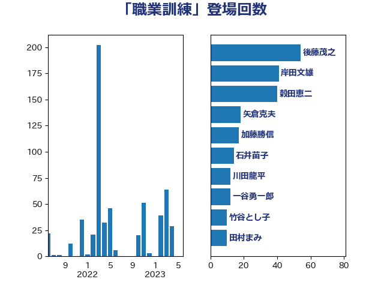

単語「職業訓練」

| 後藤茂之 | 自由民主党 | 53 回 |
| 岸田文雄 | 自由民主党 | 35 回 |
| 田村憲久 | 自由民主党 | 29 回 |
| 矢倉克夫 | 公明党 | 22 回 |
| 石井苗子 | 日本維新の会 | 14 回 |
| 菅義偉 | 自由民主党 | 13 回 |
| 川田龍平 | 立憲民主党 | 12 回 |
| 大島敦 | 立憲民主党 | 11 回 |
| 竹谷とし子 | 公明党 | 10 回 |
| 西村康稔 | 自由民主党 | 10 回 |
| ながえ孝子 | 無所属 | 9 回 |
| 田村まみ | 国民民主党 | 9 回 |
| 一谷勇一郎 | 日本維新の会 | 7 回 |
| 梅村聡 | 日本維新の会 | 7 回 |
| 中川正春 | 立憲民主党 | 6 回 |
| 梶山弘志 | 自由民主党 | 6 回 |
| 深澤陽一 | 自由民主党 | 6 回 |
| 古川禎久 | 自由民主党 | 5 回 |
| 若宮健嗣 | 自由民主党 | 5 回 |
| 西岡秀子 | 国民民主党 | 5 回 |
| 山本香苗 | 公明党 | 4 回 |
| 島村大 | 自由民主党 | 4 回 |
| 野田聖子 | 自由民主党 | 4 回 |
| 上川陽子 | 自由民主党 | 3 回 |
| 古賀篤 | 自由民主党 | 3 回 |
| 山下芳生 | 日本共産党 | 3 回 |
| 山口那津男 | 公明党 | 3 回 |
| 新妻秀規 | 公明党 | 3 回 |
| 枝野幸男 | 立憲民主党 | 3 回 |
| 福岡資麿 | 自由民主党 | 3 回 |
| 福島みずほ | 社会民主党 | 3 回 |
| 遠藤良太 | 日本維新の会 | 3 回 |
| 高木かおり | 日本維新の会 | 3 回 |
| 麻生太郎 | 自由民主党 | 3 回 |
| 下村博文 | 自由民主党 | 2 回 |
| 丸川珠代 | 自由民主党 | 2 回 |
| 伊佐進一 | 公明党 | 2 回 |
| 伊藤渉 | 公明党 | 2 回 |
| 佐藤英道 | 公明党 | 2 回 |
| 山際大志郎 | 自由民主党 | 2 回 |
| 日下正喜 | 公明党 | 2 回 |
| 本村伸子 | 日本共産党 | 2 回 |
| 永岡桂子 | 自由民主党 | 2 回 |
| 玉木雄一郎 | 国民民主党 | 2 回 |
| 田中健 | 国民民主党 | 2 回 |
| 石垣のりこ | 立憲民主党 | 2 回 |
| 緑川貴士 | 立憲民主党 | 2 回 |
| 角田秀穂 | 公明党 | 2 回 |
| 鈴木俊一 | 自由民主党 | 2 回 |
| 井上哲士 | 日本共産党 | 1 回 |
| 仁木博文 | 無所属 | 1 回 |
| 勝部賢志 | 立憲民主党 | 1 回 |
| 古川元久 | 国民民主党 | 1 回 |
| 吉田とも代 | 日本維新の会 | 1 回 |
| 塩村あやか | 立憲民主党 | 1 回 |
| 太田房江 | 自由民主党 | 1 回 |
| 安江伸夫 | 公明党 | 1 回 |
| 小泉進次郎 | 自由民主党 | 1 回 |
| 尾崎正直 | 自由民主党 | 1 回 |
| 山本博司 | 公明党 | 1 回 |
| 山添拓 | 日本共産党 | 1 回 |
| 杉本和巳 | 日本維新の会 | 1 回 |
| 柳ヶ瀬裕文 | 日本維新の会 | 1 回 |
| 柴田巧 | 日本維新の会 | 1 回 |
| 森まさこ | 自由民主党 | 1 回 |
| 橋本岳 | 自由民主党 | 1 回 |
| 池下卓 | 日本維新の会 | 1 回 |
| 池田佳隆 | 自由民主党 | 1 回 |
| 泉健太 | 立憲民主党 | 1 回 |
| 浜口誠 | 国民民主党 | 1 回 |
| 清水真人 | 自由民主党 | 1 回 |
| 源馬謙太郎 | 立憲民主党 | 1 回 |
| 片山さつき | 自由民主党 | 1 回 |
| 田村智子 | 日本共産党 | 1 回 |
| 石井啓一 | 公明党 | 1 回 |
| 石橋通宏 | 立憲民主党 | 1 回 |
| 石田昌宏 | 自由民主党 | 1 回 |
| 石田真敏 | 自由民主党 | 1 回 |
| 磯崎仁彦 | 自由民主党 | 1 回 |
| 稲津久 | 公明党 | 1 回 |
| 輿水恵一 | 公明党 | 1 回 |
| 道下大樹 | 立憲民主党 | 1 回 |
| 里見隆治 | 公明党 | 1 回 |
| 金村龍那 | 日本維新の会 | 1 回 |
| 阿部知子 | 立憲民主党 | 1 回 |
| 音喜多駿 | 日本維新の会 | 1 回 |
| 高野光二郎 | 自由民主党 | 1 回 |